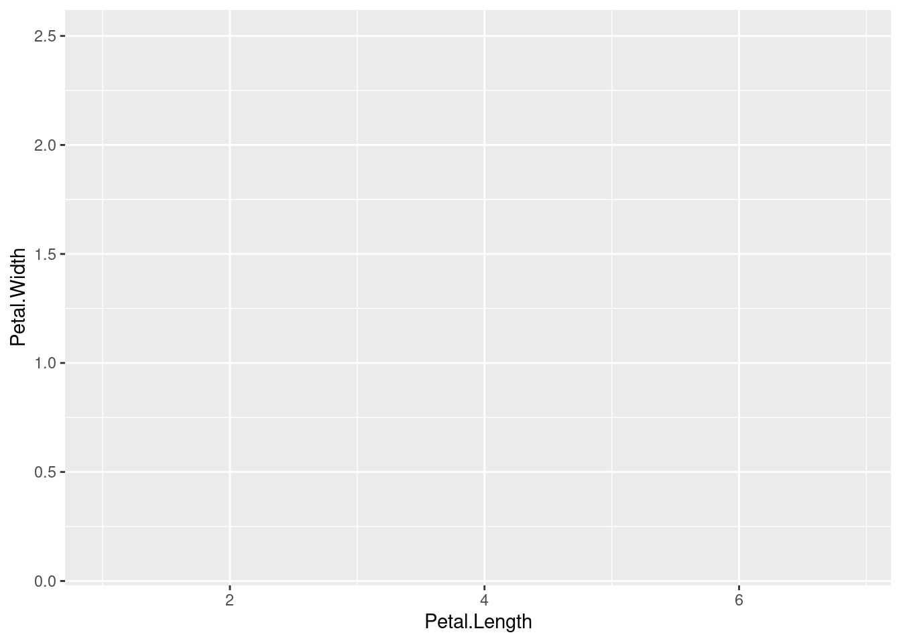
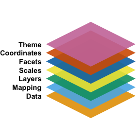
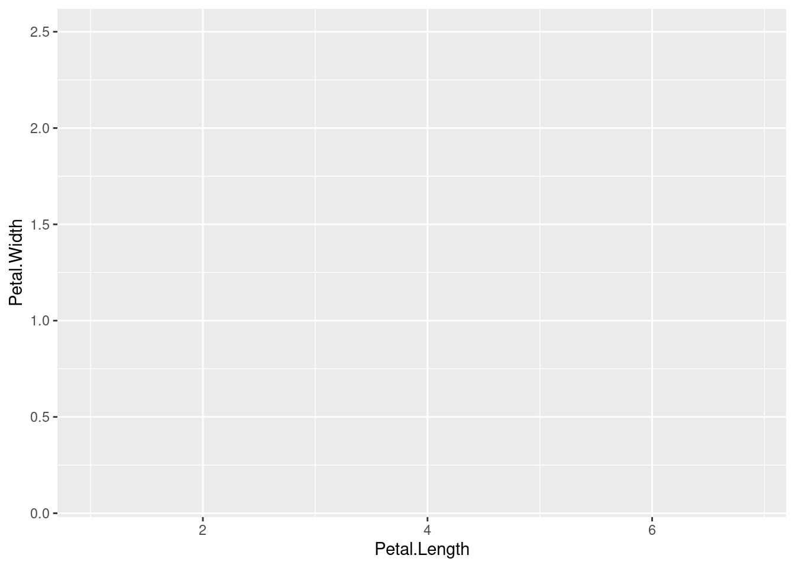
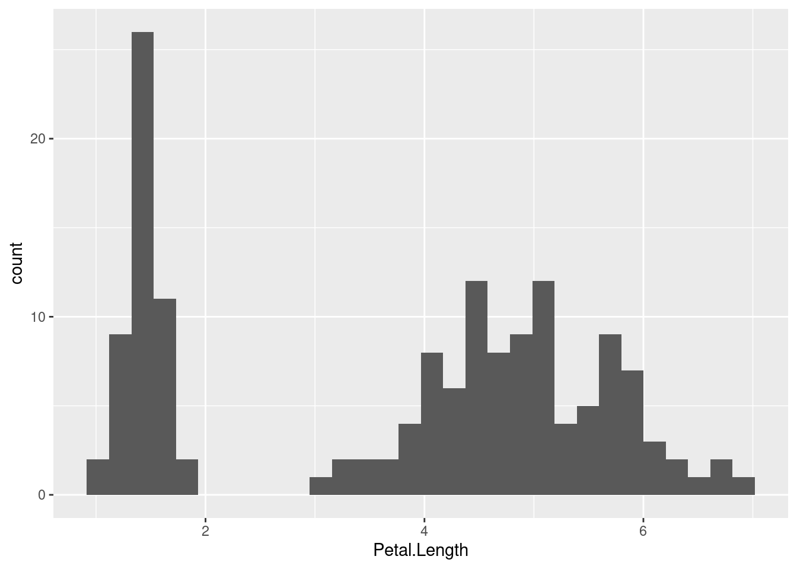
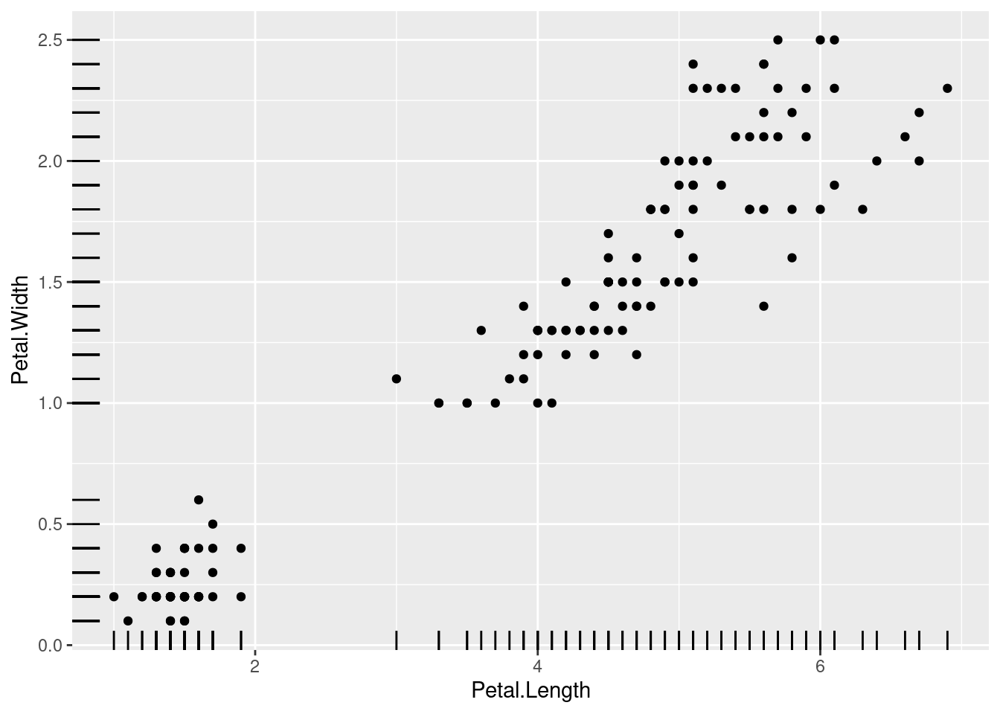
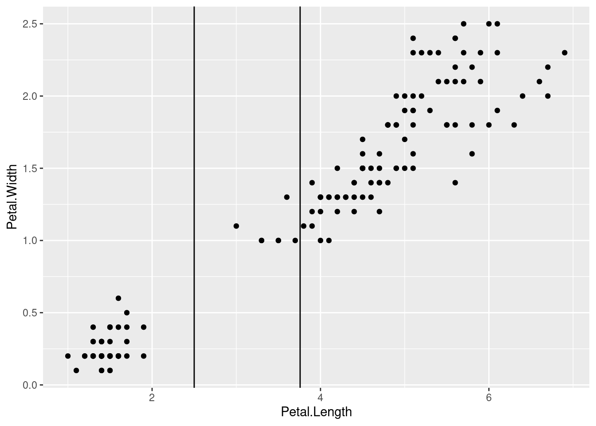
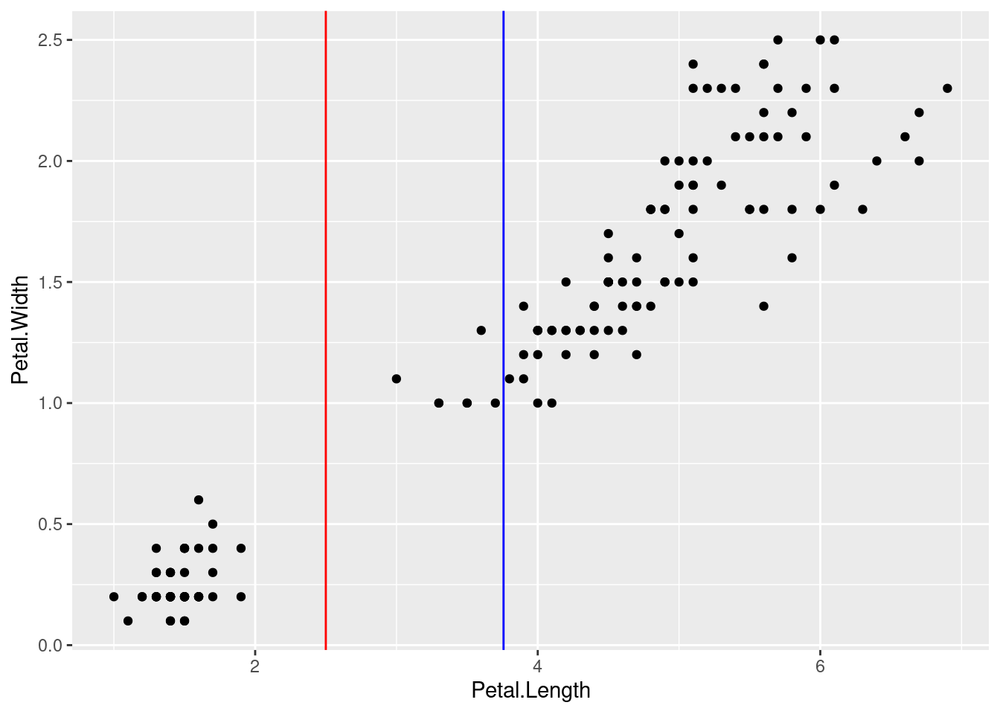
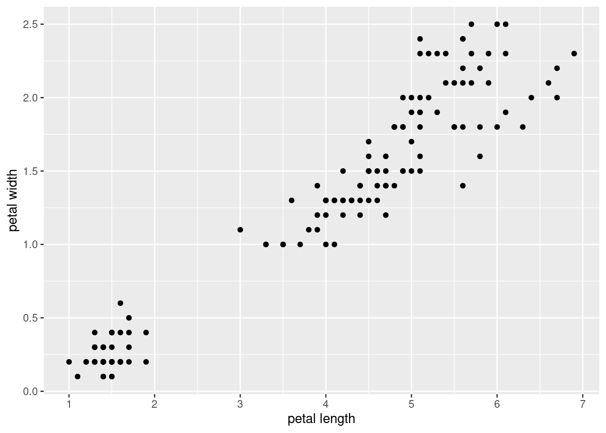
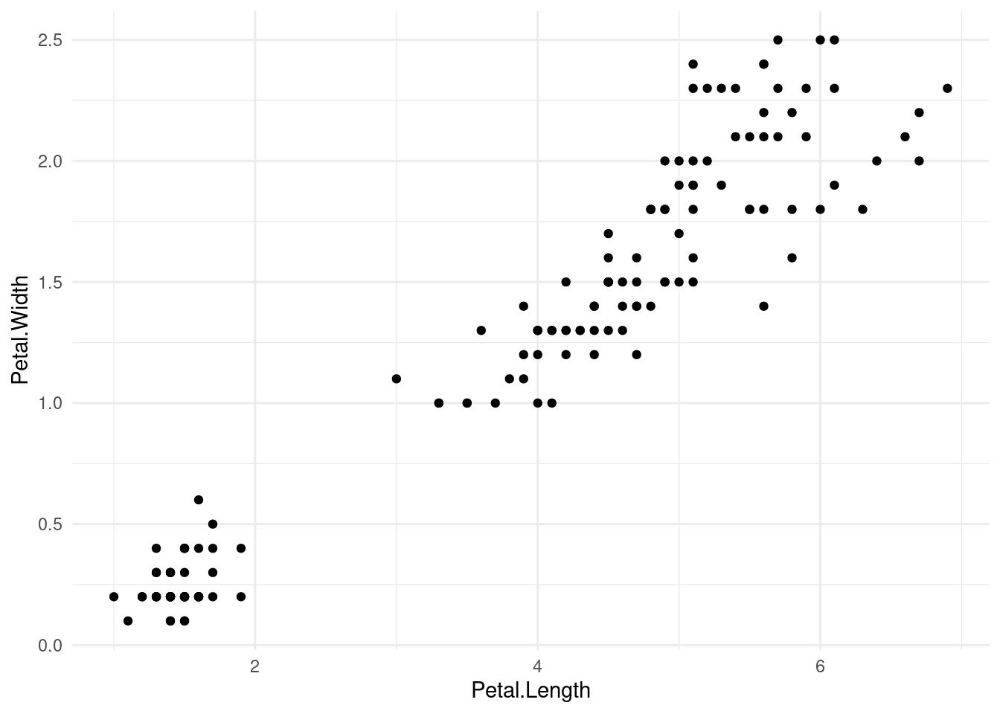
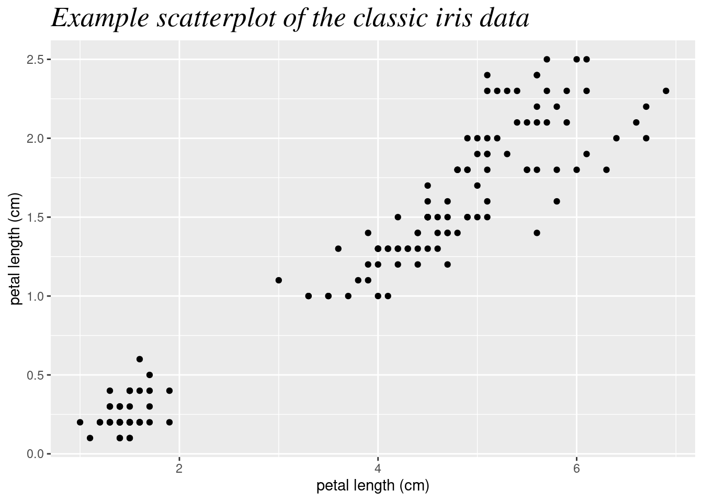

library(ggplot2)
ggplot(data = iris, aes(x = Petal.Length, y = Petal.Width))
ggplot2?The ggplot2 package is an extremely popular package for creating data visualizations in R. It is not merely a method for creating standard plots, but an entire framework for creating a huge hage of possible graphs and plots. It comes with sensible defaults so that it is easy to make good-looking plots with minimal work, but it also offers a very high level of control in the details of every aspect of your graphics.
Base R1 actually comes with a lot of graphical capability. It is quite possible to make effective and beautiful data visualizations just with those tools. However, beyond a few basic plots, the difficulty curve can become very steep, and there are some serious limitations on how these graphics can be modified programmatically.
1 The standard set of packages that comes with a base installation of R includes a graphics package, and some plotting functions are also in the base package.
Around the beginning of the millenium(!), Paul Murrell built an entirely new system for generating graphics in R in the grid package. This package built up an entirely new set of primitives for how graphical objects could be represented, manipulated, and displayed, and after a few years this package was included in R as a base package.
One of the goals of grid was to construct a framework that other developers could build on top of, and this goal was definitely achieved. Deepayan Sarkar built the lattice package thanks to grid, and this was a kind of turning point in enabling a whole new wave of development. So when Hadley Wickham implemented the prototype2 of ggplot2, building on top of the grid package was a perfect fit.
2 You might wonder where the “2” comes from in the name ggplot2. There was an initial ggplot package – the first implementation, based on Wickham’s PhD dissertation. When it was re-implemented from the ground up, Wickham chose to name this new incarnation ggplot2. So even though it’s been a very long time since there was a ggplot package available, and many significant version chances in the development of ggplot2, the name ggplot2 has stuck probably forever.
Wickham’s goal was to implement a system based on Leland Wilkinson’s influential book, A Grammar of Graphics.3 Wilkinson’s main innovation was to put together an entire system and “language” of primitives having to do with data visualization. This “grammar” could then serve as the basis for designing new sets of visualizations in a cohesive way. In other words, Wilkinson proposed a new set of building blocks to help organize and describe the construction of new data visualizations.
3 Wilkinson himself was responsible for many influential software packages as well. His SYSTAT system formed the basis of the popular SPSS statistical software, and he worked as a vice president of Tableau.
This “building block” concept is arguably one of the main reasons for ggplot2’s success, because it makes it easier to build visualizations conceptually, and to experiment with new combinations and formulations of previous patterns.
ggplot2?Because of its popularity and the “building block” design mentality, people continue to build other packages that are designed to interface with it or build on it. By learning how to use ggplot2, you are not only learning how to construct your own data visualizations from scratch, you are also opening the doors to make use of a huge number of other innovations and specialized graph types, because of this large community of users and developers. The design of ggplot2 has also influenced many other systems outside of just R, such as the “seaborn” module for Python. So even outside of R, understanding how ggplot2 works may make it easier for you to learn other data visualization tools.
One of the limitations of the base R system was that each plotting function felt like you were learning an entirely new system. In contrast, while making certain kinds of detailed tweaks in ggplot2 can feel cumbersome, these kinds of details apply the same across the entire system, ultimately making in easier to learn in the long run.
The default settings in ggplot2 are also very sensible, and follow practices established by foundational work by Tufte, Cleveland, Wilkinson, and others. So even if you end up customizing and departing from these defaults, usually you can live with the defaults as you are making initial plots, and you can put off the nitty-gritty modifications until later in the process. The defaults manage to prioritize functionality without being unattractive. Are the defaults the most beautiful ultimate options? Not usually, but they are also not usually ugly, either. There is something off-putting about having to look at a bunch of ugly graphics that can slow your momentum, so having the default plots look at least somewhat attractive is an underrated bonus.
It’s these combined features – being able to quickly assemble new visualizations out of simple combinations and having good default settings for clear, uncluttered, functional, and attractive plots – that make ggplot2 an excellent system for performing exploratory data analysis (EDA). One of the goals of EDA is to be able to quickly examine data from a number of different angles, and the features of ggplot2 enable this. Moreover, ggplot2 is part of the R system, which is arguably the single best and most flexible platform for data analysis in general, so you have all the benefits of that system, in addition to the features of ggplot2. Especially for EDA, this is ideal, because having to switch between systems in order to do things like plotting, statistics, data manipulation, etc. just slows down your process, and for EDA, speed and flexibility are incredibly valuable.
ggplot2While ggplot2 combined with the general power of R makes this one of the best systems for EDA, there are aspects of data visualization that do not play into ggplot2’s strengths. Its main weakness is in creating interactive data visualizations, such as the kind you might see published as an interactive graphic on a news website.
That’s not to say that interactivity is absent. There are some specialized tools that help bridge the gap a bit, and systems like Shiny can be used to build full-on interactive web applications, but these are all essentially external tools, and not part of ggplot2 itself.
ggplot2?The most confusing thing when starting to use ggplot2 is how it builds up plots in layers, both because this abstracts somewhat from how we might normally think about data plots, but also because even the syntax itself is a little idiosynchratic compared to other things in R.
The graphic below depicts how the various aspects of ggplot2 are “layered” to create a plot.

At the base is the data, which is maybe obvious, but ggplot2 does take a kind of perspective here that is good to keep in mind. In short, ggplot2 works best when you have your data in a tidy data frame, where the variables of interest are arranged in columns. This segues into the next conceptual layer, the mapping. The core idea here is that you essentially need to map variables to graphical dimensions. The term for graphical dimension that comes from Wilkinson’s work is aesthetic.
These two layers are captured with the ggplot() function4. The first argument is the data frame, and the second argument is the mapping, which is created using the aes() function, which stands for aesthetic. In the following code, we are setting up a mapping for the classic iris dataset from Fisher (1936), where values on the x-axis are mapped to petal length, and values on the y-axis are mapped to petal width.5
4 As a reminder: even though the package is called ggplot2, the core function is ggplot()
5 This data set is perhaps a little over-used, but it comes pre-loaded in R, and since it is so well known, visualizing it is almost like a “hello world” for visualization. You can see details by running ?iris in R.
library(ggplot2)
ggplot(data = iris, aes(x = Petal.Length, y = Petal.Width))
Why didn’t this plot show anything? At this point, we have only really set up the mapping, where we want the x-axis to depend on the Petal.Length column of the iris data frame and the y-axis to depend on the Petal.Width column. But we haven’t yet specified what exactly we should draw. In other words, we’ve set up the x-y coordinate system of the plot, but we haven’t given the data a shape yet, so all we see is the plot set up with axes and labels.
But note that this is already helpful, because ggplot2 provides axis labels from the column names, and provides some initial choices for how to display values on each axis, with a sensible number of tick marks.
So the next step is to add a geom layer, which is the ggplot2 term for “shape to draw.” Some geoms are more “primitive”, simply drawing a shape with the specified dimensions, but others are more complex by performing other transformations or operations as part of rendering the graphic. But the gist is that the geoms are essentially the things that “draw” the data.
Here, let’s just use the simple geom_point() which draws points for each x-y combination.
1ggplot(iris, aes(Petal.Length, Petal.Width)) + geom_point()data is the first argument of ggplot() and x and y are the first two default arguments of aes(), in that order.

This kind of plot is typically known as a “scatterplot”, but the point here is that in ggplot2, for many plot types, we simply build them up from a set of primitives. In this case, geom_point() is just a way to draw dots with x and y values.
If we instead wanted to plot a histogram of the Petal.Length variable, we would only need to supply an x mapping in the aes() function, because histograms only require a single variable. Then the geom_histogram() does all the work, in creating bins and displaying bars based on the number of data points in each bin. This is an example of a geom that does a fair amount of “behind the scenes” work in order to draw the shape.
ggplot(iris, aes(Petal.Length)) + geom_histogram()
As you can see from our initial examples, ggplot2 takes the concept of “adding layers” quite literally in the code, because you use a + symbol to combine each layer of the plot. Note that each of the layers has its own function. For example, the geom_point() and geom_histogram() in the code above are not inside the ggplot() function, but separate, and the results of these functions are “added” to the result of the ggplot() function. This syntax is a little unusual for how things normally look in R, so I just want to draw your attention to it.
However, once we wrap our head around the concepts of the graph “layers”, this syntax makes a lot of sense. So every plot starts with a ggplot() call that establishes the data and some initiap mappings, and then with each +, we can add a new layer. In practice, it can be helpful to put each new layer on a new line in our code, to make it a little easier to read. Just make sure that each line ends with that + symbol that tells R that will still have more layers to add.
By adding layers, we can add additional geoms in order to easily add more to what is being visualized in our plot. For example, there is also a “rug” geom that creates what is often called a “rug plot”, but is literally just some lines drawn on the axis margins for each value along that axis. This can help give a sense of the distributions of the x and y values separately, and can be a nice enhancement for a plain scatterplot. In ggplot2, all we need to do is to add geom_rug() as an additional layer to our previous scatterplot code.6
6 As an aside, this particular rug plot is not all that helpful, because many values in this data set overlap (i.e., have the exact same values), so in practice, many of the “rug lines” are plotted on top of each other, which conceals the distribution information somewhat.
ggplot(iris, aes(Petal.Length, Petal.Width)) +
geom_point() +
geom_rug()
aes()Another example of geoms that is handy as an additional layer are the “hline” and “vline” geoms, which allow us to draw horizontal and vertical lines. These are often useful as a kind of annotation, if we want to highlight certain values as cut-offs or mid-points or other kinds or reference values. But when you add geoms, you may need to add more mappings. For example, geom_vline() does not have an x mapping, but it does need an xintercept mapping, because the line is essentially drawn at a single x value that will intersect with the x-axis.
Furthermore, when you add mappings, you have two choices. On the one hand, you can map graphical properties to a constant, like if we simply want to specify that we want a vertical line at the value of x = 2.5. In this case, these are specified as simple arguments inside the geom. However, we may also want to map a graphical property to something in our data, and by definition a data-graphics mapping is an aesthetic, so we need to put this mapping inside of another aes() function.
As an example, let’s add two vertical lines to our iris scatterplot. First, let’s add a line that simply at x = 2.5, maybe because we want to pick a spot in the middle of the apparent “gap” in x-values. Second, let’s add a line that is at the mean value of Petal.Length. Because this second one is a mapping with our data, we should put it inside aes().
ggplot(iris, aes(Petal.Length, Petal.Width)) +
geom_point() +
geom_vline(xintercept = 2.5) +
geom_vline(aes(xintercept = mean(Petal.Length)))
Let’s also distinguish these lines by changing their colors. Color is another graphical property, so we can either map it to data or not. But in this case, we just want the “separation” line to be red and the “mean” line to be blue, so we can set those values as arguments in geom_vline(). Because we are setting colors to specific values and not mapping them to some variable in our data, both of these need to be outside of any aes() functions. In other words, any data-graphics mappings are aesthetics and need to be inside aes(), but if it’s not a data-graphic mapping, it should not be inside aes().
ggplot(iris, aes(Petal.Length, Petal.Width)) +
geom_point() +
geom_vline(xintercept = 2.5, color = "red") +
geom_vline(aes(xintercept = mean(Petal.Length)), color = "blue")
So far we have only looked at geoms as layers. However, recall this graphic:
In this diagram, the “layers” layer refers to the geoms. But we also have scales, facets, coordinates, and theme. We won’t walk through each of these here, but let’s look at scales and theme.
The term scales basically refers to the details of an aesthetic. For example, we set up a mapping between values on the x-axis and Petal.Length values from our data. This is the aesthetic, but there are a lot of details about how that mapping is displayed, and these details are captured by the scale.
In more concrete terms, ggplot2 has a series of scale functions that you can add as layers to the plot code, and the arguments of these functions change how the axis or dimension is displayed. One common use is to change the label on the axis, because frequently our variable names are not very “pretty”. It’s good to have the variable name displayed as a default, because it helps us keep track of what exact column is being shown in the data. But if we want to share the graph for other audiences, we might want to make a “prettier” or more informative label.
But we can change other properties of the scale as well. One example is setting the breaks of the axis, which determines which values are labeled with tick marks on the axis. So far, our plots have spread the x-axis values out by 2, but perhaps we would like tick marks every 1 cm of petal length.
The code below uses two scale layers to change the names of the axes, but also the breaks on the x-axis:
ggplot(iris, aes(Petal.Length, Petal.Width)) +
geom_point() +
scale_y_continuous(name = "petal width") +
scale_x_continuous(name = "petal length", breaks = 1:7)
Where the scale functions can modify the display of the axes (and other dimension like color), there are a lot of other “background” graphical properties. For example, the default ggplot2 theme uses a light gray background with “major” white grid lines at the axis breaks, and thinner “minor” grid lines halfway between each major grid line. In order to change the appearance of this grid background, you can use the theme() layer. The theme() layer can also modify other aspects of how things are displayed, like the fonts, text sizes, and so on.
The good thing is that you can exercise a fine degree of control over every one of these elements, but the downside is that managing these details can start to feel very fiddly and annoying. Fortunately, in addition to the default theme, ggplot2 comes with several other “overall” themes to choose from, and you can also define your own themes if you would like to set up a consistent graphical “look” across multiple plots.
The code below shows an example of the “minimal” theme, which is another nice default.
ggplot(iris, aes(Petal.Length, Petal.Width)) +
geom_point() +
theme_minimal()
There are a number of other tweaks that you can make using scales or theme, but sometimes those can be a little cumbersome, so the authors of ggplot2 have added some other convenience functions to do specific things. Some of these have been superceded over time, so if you find examples or other documentation elsewhere, you may see different options.
One example is that currently, there is a recommended labs() function that is intended to control all of the label text in a unified way. This includes things like the plot title, subtitle, caption, and alt-text (useful for displaying on websites, for example). You can also use this function to change axis labels.
The following shows an example using a labs() layer to set the title and axis labels, and then a theme() layer to adjust the font and size of the title text.
ggplot(iris, aes(Petal.Length, Petal.Width)) +
geom_point() +
labs(title = "Example scatterplot of the classic iris data",
x = "petal length (cm)", y = "petal length (cm)") +
theme(plot.title = element_text(family = "serif", face = "italic", size = 20))
We are just scratching the surface of ggplot2 here, but we have covered the major concepts that you need in order to start building plots. Beyond these concepts, the main details to explore further come from learning more about all of the various options available, such as all of the geom functions and how they work.
Fortunately, the documentation for ggplot2 is excellent. In addition to standard built-in help files using R’s help system7, I highly recommend bookmarking the reference section of the official website:
7 for example, run ?geom_histogram at the console to pull up the help file for that geom
The R Graph Gallery is also an excellent resource if you would like to browse a wide range of visualizations for inspiration and example code:
For the purposes of this course, you should next go on to other visualization topics. What you have learned here will help you get started.